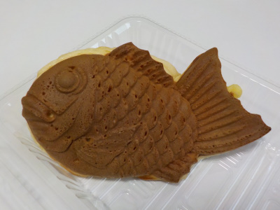
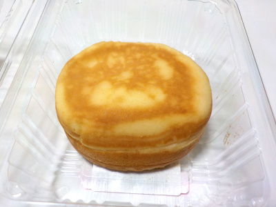
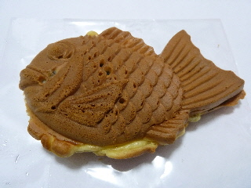
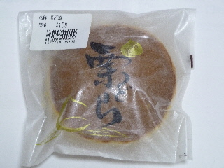

はら屋のクリームたい焼き。
2023/03/19

実演販売のたい焼きを買いました。
ふっくらしてて甘い生地で、ホットケーキみたいでした。
ホットケーキなのでクリームとよく合ってて美味しかったです。
島根県出雲市荒茅町2808-1
2023/03/19

実演販売のたい焼きを買いました。
ふっくらしてて甘い生地で、ホットケーキみたいでした。
ホットケーキなのでクリームとよく合ってて美味しかったです。
2023/02/08

今川焼きと蒸しパンの中間みたたいな感じがしました。
もっちりしっとりした生地にやさしい感じのクリームがよく合ってて美味しかったです。
2014/02/20
とっても太ったたい焼き君です。
アニメチックで格好いいです。

実演販売してるところで、尻尾まで餡が入ってるって紙が貼ってあったんですが、確かにしっかりとアンが入っていました。
尻尾が大きいので、入れやすそうですね。
ふんわりとして、厚めの生地のたい焼き君でした。
餡がとっても甘かったです。お腹のところはあんまりアンコが入っていないので、丁度いい甘さで食べやすかったです。
2011/06/23
はら屋っていうと鯛焼きのイメージが強いんですが、どら焼きもスーパーで販売しているんですね。

パッケージに栗って大きくありますが、中に入っていた栗は小さかったです。
ふんわりとしていて軽い感じのどら焼きでした。
出雲市の原屋の柏餅をいただいたのですが、
とってもしっとりしていて麩まんじゅうみたいでした。
やわらかくてもちもちした柏餅もいいものです。